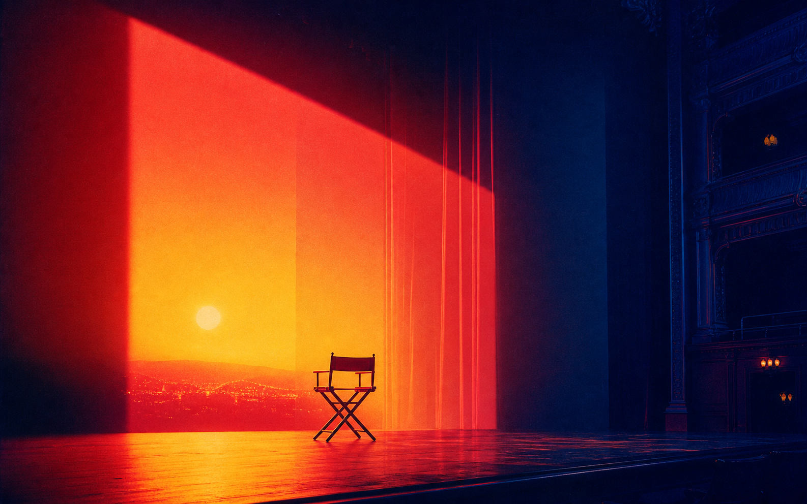
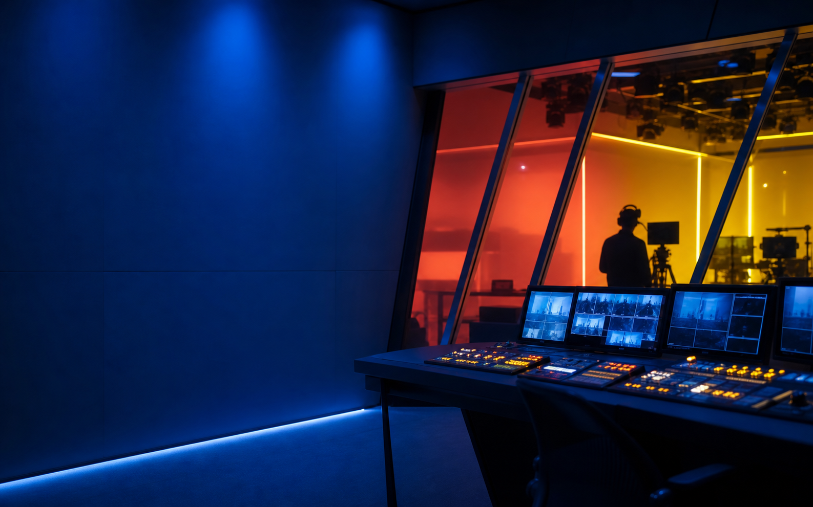
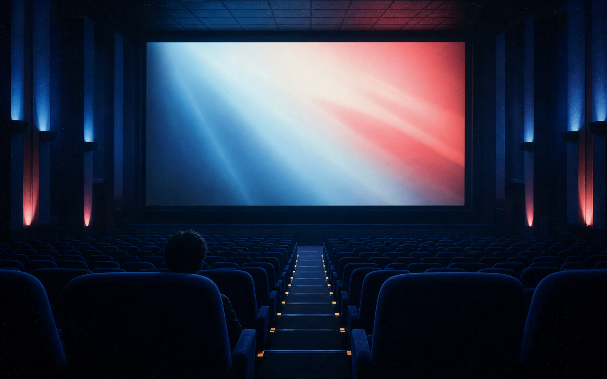
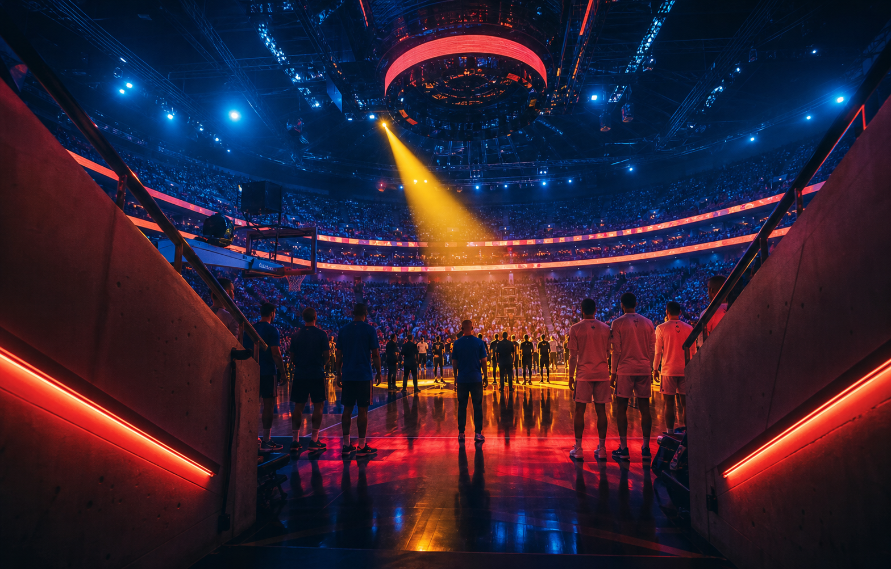

ESTRENO V-013 / 01:52:08Película · 2026
Fuego en la línea
Una noche cambia de dirección cuando la luz encuentra el escenario.
Modelo 13 · Vértigo
Películas, partidos y mundos nuevos. Elegí un corte y dejá que la noche haga el resto.

ON AIR / 13 00:47:18AHORA EN VÉRTIGO
La última función Cine · Señal 04 · En vivoVentana partida una noche, dos historias
Cortes disponibles / 01
Una programación que se mueve con vos: cine para apagar el mundo, series para estirar la noche y eventos que pasan ahora.

ESTRENO V-013 / 01:52:08Película · 2026
Una noche cambia de dirección cuando la luz encuentra el escenario.

PARA COMPARTIRColección · 18 títulos
CÓDIGO DE NOCHE
Encontrá algo que no estabas buscando.Cambio de canal / 02
La señal no espera. Entrá a la conversación cuando todavía está sucediendo.

Serie · 2 temporadas
Documental · 78 min
Deslizá la señal
La experiencia / 03
Vértigo ordena el ruido para que entrar a mirar vuelva a sentirse como una decisión, no como una tarea.
Ritmo
Continuidad
Compañía
Un corte / todos tus lugares
Entrá en minutos / 04
La señal llega lista. Sólo elegí dónde querés verla.
Mandanos un mensaje y te contamos cuál corte va mejor con tu casa.
Recibís tu acceso y lo abrís en el dispositivo que ya usás.
Elegí una historia, un partido o apretá play sin pensarlo tanto.
Elegí tu frecuencia / 05
Todo lo que querés mirar, con el plan que mejor se acomoda a tu noche.
Para empezar
$3.990 / mes
Una pantalla para tu rutina.
Más elegido
$6.490 / mes
La noche completa, compartida.
Para todos
$9.490 / mes
Una casa llena de historias.
Precios ilustrativos. Consultá disponibilidad y activación por WhatsApp.
Preguntas de control / 06
Acceso al catálogo completo de películas, series, deportes, canales en vivo y contenido para compartir en familia.
Smart TV, celular, tablet, computadora, Chromecast y los dispositivos que ya usás para mirar.
Sí. Escribinos por WhatsApp y te ayudamos a gestionar la baja cuando lo necesites.
Elegí un plan, mandanos un mensaje y recibí tu acceso listo para entrar.
Tu próxima noche
Probá Vértigo y mirá qué aparece cuando dejás de buscar.
Probar ahora por WhatsApp